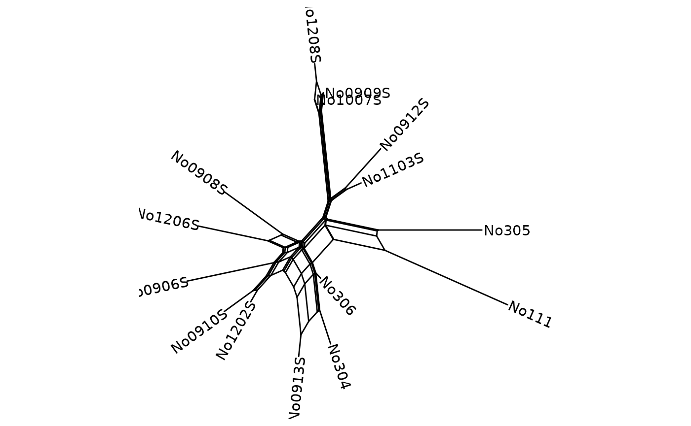
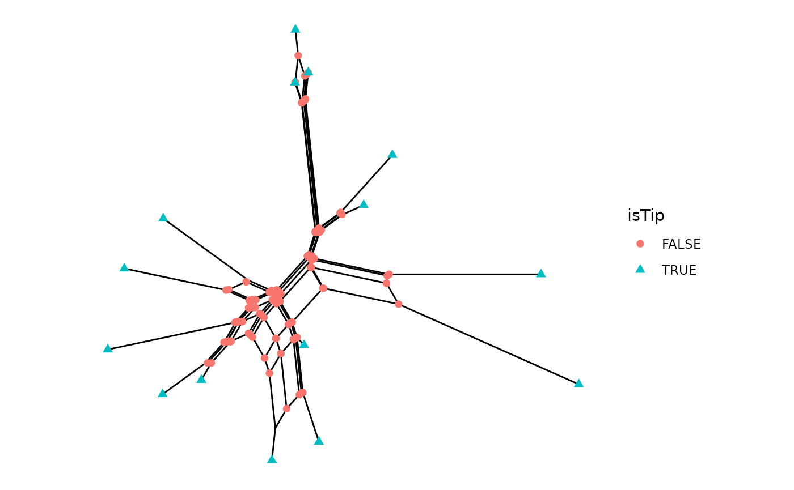
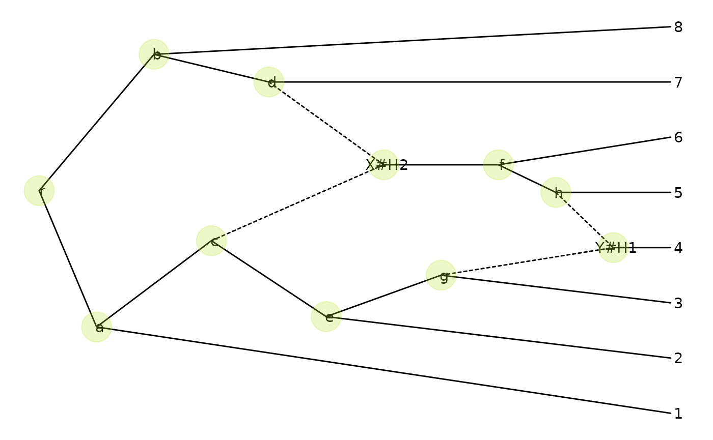

***tanggle***: Visualization of phylogenetic networks in a *ggplot2* framework
Klaus Schliep
Graz University of TechnologyMarta Vidal-García
University of CalgaryLeann Biancani
University of Rhode IslandFrancisco Henao Diaz
University of British ColumbiaEren Ada
University of Rhode IslandClaudia Solís-Lemus
University of Wisconsin-Madisonklaus.schliep@gmail.com Source:
vignettes/tanggle_vignette.Rmd
tanggle_vignette.Rmd
Introduction
Here we present a vignette for the R package tanggle, and provide an overview of its functions and their usage. Tanggle extends the ggtree R package (Yu et al. 2017) to allow for the visualization of several types of phylogenetic networks using the ggplot2 (Wickham 2016) syntax. More specifically, tanggle contains functions to allow the user to effectively plot: (1) split (i.e. implicit) networks (unrooted, undirected) and (2) explicit networks (rooted, directed) with reticulations. It offers an alternative to the plot functions already available in ape (Paradis and Schliep 2018) and phangorn (Schliep 2011).
List of functions
| Function name | Brief description |
|---|---|
geom_splitnet |
Adds a splitnet layer to a ggplot, to combine visualising data and the network |
ggevonet |
Plots an explicit network from a phylo object |
ggsplitnet |
Plots an implicit network from a phylo object |
minimize_overlap |
Reduces the number of reticulation lines crossing over in the plot |
node_depth_evonet |
Returns the depths or heights of nodes and tips in the phylogenetic network |
Getting started
Install the package from Bioconductor directly:
if (!requireNamespace("BiocManager", quietly = TRUE))
install.packages("BiocManager")
BiocManager::install("tanggle")Or install the development version of the package from Github.
if (!requireNamespace("remotes", quietly=TRUE))
install.packages("remotes")
remotes::install_github("KlausVigo/tanggle")If you need to install ggtree from github:
remotes::install_github("YuLab-SMU/ggtree")And load all the libraries:
Split Networks
Split networks are data-display objects which allow for the
definition of 2 (or more) options for non-compatible splits. Split
networks are most often used to visualize consensus networks (Holland et al. 2004) or neighbor-nets (Bryant and Moulton 2004). This can be done
either by using the consensusNet or
neighbor-net functions in phangorn (Schliep 2011) or by importing nexus files from
SplitsTree (Huson and Bryant 2006).
Data Types
tanggle accepts three forms of input data for split networks. The following input options all generate a networx object for plotting.
Nexus file created with SplitsTree (Huson and Bryant 2006) and read with the
read.nexus.networkfunction in phangorn (Schliep 2011).Read in a split network in nexus format:
fdir <- system.file("extdata/trees", package = "phangorn")
Nnet <- phangorn::read.nexus.networx(file.path(fdir,"woodmouse.nxs"))- A collection of gene trees (e.g.~from RAxML (Stamatakis 2014)) in one of the following
formats:
- Nexus file read with the function
read.nexus - Text file in Newick format (one gene tree per line) read with the
function
read.treeA consensus split network is then computed using the functionconsensusNetin phangorn (Schliep 2011).
- Nexus file read with the function
- Sequences in nexus, fasta or phylip format, read with the function
read.phyDatin phangorn (Schliep 2011) or the functionread.dnain ape (Paradis and Schliep 2018). Distances matrices are then computed for specific models of evolution using the functiondist.mlin phangorn (Schliep 2011) ordist.dnain ape (Paradis and Schliep 2018). From the distance matrix, a split network is reconstructed using the functionneighborNetin phangorn (Schliep 2011). Optional: branch lengths may be estimated using the functionsplitsNetworksin phangorn (Schliep 2011).
Plotting a Split Network:
We can plot the network with the default options:
p <- ggsplitnet(Nnet) + geom_tiplab2()
pWhen we can set the limits for the x and y axis so that the labels are readable.

You can rename tip labels. Here we changed the names to species from 1 to 15:
Nnet$translate$label <- seq_along(Nnet$tip.label)We can include the tip labels with geom_tiplab2, and
customize some of the options. For example, here the tip labels are in
blue and both in bold and italics, and we show the internal nodes in
green:
ggsplitnet(Nnet) + geom_tiplab2(col = "blue", font = 4, hjust = -0.15) +
geom_nodepoint(col = "green", size = 0.25)Nodes can also be annotated with geom_point.
ggsplitnet(Nnet) + geom_point(aes(shape=isTip, color=isTip), size=2)
Plotting Explicit Networks
The function ggevonet plots explicit networks
(phylogenetic trees with reticulations). A recent addition to
ape (Paradis and Schliep 2018)
made it possible to read in trees in extended newick format (Cardona, Rosselló, and Valiente 2008).
Read in an explicit network (example from Fig. 2 in Cardona et al. 2008):
z <- read.evonet(text = "((1,((2,(3,(4)Y#H1)g)e,(((Y#H1,5)h,6)f)X#H2)c)a,
((X#H2,7)d,8)b)r;")Plot an explicit network:
ggevonet(z, layout = "rectangular") + geom_tiplab() + geom_nodelab()
p <- ggevonet(z, layout = "slanted") + geom_tiplab() + geom_nodelab()
p + geom_tiplab(size=3, color="purple")
p + geom_nodepoint(color="#b5e521", alpha=1/4, size=10)
Summary
This vignette illustrates all the functions in the R package tanggle, and provides some examples on how to plot both explicit and implicit networks. The split network plots should take most of the functions compatible with unrooted trees in ggtree. The layout options for explicit network plots are rectangular or slanted.
Session info
sessionInfo()
#> R version 4.5.1 (2025-06-13)
#> Platform: x86_64-pc-linux-gnu
#> Running under: Ubuntu 24.04.2 LTS
#>
#> Matrix products: default
#> BLAS: /usr/lib/x86_64-linux-gnu/openblas-pthread/libblas.so.3
#> LAPACK: /usr/lib/x86_64-linux-gnu/openblas-pthread/libopenblasp-r0.3.26.so; LAPACK version 3.12.0
#>
#> locale:
#> [1] LC_CTYPE=C.UTF-8 LC_NUMERIC=C LC_TIME=C.UTF-8
#> [4] LC_COLLATE=C.UTF-8 LC_MONETARY=C.UTF-8 LC_MESSAGES=C.UTF-8
#> [7] LC_PAPER=C.UTF-8 LC_NAME=C LC_ADDRESS=C
#> [10] LC_TELEPHONE=C LC_MEASUREMENT=C.UTF-8 LC_IDENTIFICATION=C
#>
#> time zone: UTC
#> tzcode source: system (glibc)
#>
#> attached base packages:
#> [1] stats graphics grDevices utils datasets methods base
#>
#> other attached packages:
#> [1] phangorn_2.12.1 ape_5.8-1 tanggle_1.15.2 ggtree_3.16.2
#> [5] ggplot2_3.5.2 BiocStyle_2.36.0
#>
#> loaded via a namespace (and not attached):
#> [1] yulab.utils_0.2.0 sass_0.4.10 generics_0.1.4
#> [4] tidyr_1.3.1 ggplotify_0.1.2 lattice_0.22-7
#> [7] digest_0.6.37 magrittr_2.0.3 evaluate_1.0.4
#> [10] grid_4.5.1 RColorBrewer_1.1-3 bookdown_0.43
#> [13] fastmap_1.2.0 Matrix_1.7-3 jsonlite_2.0.0
#> [16] BiocManager_1.30.26 purrr_1.0.4 aplot_0.2.8
#> [19] scales_1.4.0 codetools_0.2-20 lazyeval_0.2.2
#> [22] textshaping_1.0.1 jquerylib_0.1.4 cli_3.6.5
#> [25] rlang_1.1.6 tidytree_0.4.6 withr_3.0.2
#> [28] cachem_1.1.0 yaml_2.3.10 tools_4.5.1
#> [31] parallel_4.5.1 dplyr_1.1.4 fastmatch_1.1-6
#> [34] vctrs_0.6.5 R6_2.6.1 gridGraphics_0.5-1
#> [37] lifecycle_1.0.4 fs_1.6.6 ggfun_0.1.9
#> [40] treeio_1.32.0 ragg_1.4.0 pkgconfig_2.0.3
#> [43] desc_1.4.3 pkgdown_2.1.3 pillar_1.11.0
#> [46] bslib_0.9.0 gtable_0.3.6 glue_1.8.0
#> [49] Rcpp_1.1.0 systemfonts_1.2.3 xfun_0.52
#> [52] tibble_3.3.0 tidyselect_1.2.1 knitr_1.50
#> [55] farver_2.1.2 igraph_2.1.4 patchwork_1.3.1
#> [58] htmltools_0.5.8.1 nlme_3.1-168 labeling_0.4.3
#> [61] rmarkdown_2.29 compiler_4.5.1 quadprog_1.5-8